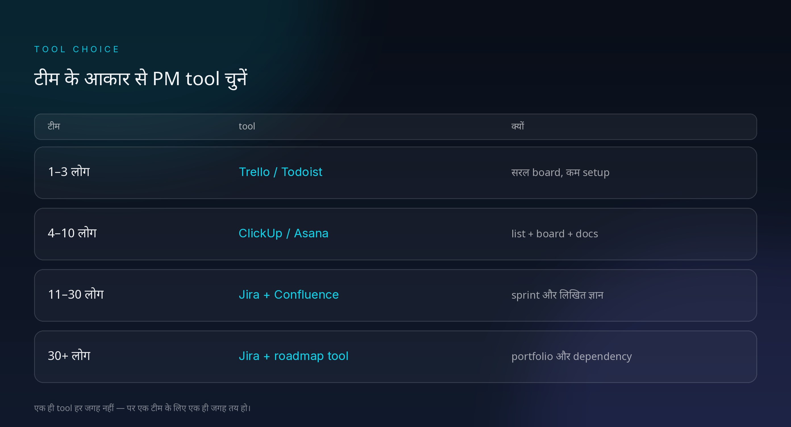

Project Management Tools: Team Ke Liye Kaise Chunen
हर टीम एक बार इस सवाल पर अटकती है — "हमें कौन सा project management tool लेना चाहिए?" सवाल सही है, पर जवाब अक्सर गलत दिशा में खोजा जाता है। लोग features की सूची देखते हैं, demo माँगते हैं, दो हफ्ते में एक tool चुनते हैं, और तीन महीने बाद वही tool खाली पड़ा मिलता है।
असल में tool चुनने से पहले यह तय करना पड़ता है कि टीम काम कैसे करती है — कौन काम तय करता है, कहाँ लिखा जाता है, और "हो गया" का मतलब क्या है। इस आर्टिकल में मैं project management tools की तुलना, team size के हिसाब से चुनाव, setup का तरीका, रोज़ की आदतें और पाँच आम गलतियाँ बताऊँगा।
छोटा जवाब: 10 लोगों तक की टीम के लिए Trello या Asana का सरल board काफी है, 10–30 लोगों के लिए ClickUp या Asana का project view, और software टीम के लिए Jira। चुनाव से ज़्यादा ज़रूरी है कि एक ही tool में सब कुछ रहे और हर हफ्ते उसकी समीक्षा हो।
Project management tool asal me kya karta hai
इसका काम तीन चीज़ें करना है — काम को दिखाना, ज़िम्मेदारी तय करना, और प्रगति का एक साझा सच बनाए रखना। बस इतना। जो tool इन तीन से आगे जाकर अपने charts, fields और automation से टीम को उलझा दे, वह नुकसान कर रहा है।
इसे ऐसे समझें। एक छोटी design studio में तीन लोग हैं और 12 client projects। अगर काम WhatsApp, Excel और दिमाग़ में बँटा है, तो हर सोमवार सुबह एक घंटा सिर्फ "कौन क्या कर रहा है" पूछने में जाता है। एक साधारण board इस घंटे को दस मिनट में बदल देता है। यही असली फायदा है, कोई जादुई feature नहीं।
Tool chunne se pehle 4 sawal
पहला — टीम कितनी बड़ी है और कितनी तेज़ी से बढ़ेगी? तीन लोगों के लिए जो tool ठीक है, वह 15 लोगों पर अटक सकता है। आज की नहीं, अगले साल की संख्या देखें।
दूसरा — काम किस तरह आता है? अगर काम तय-तारीख वाले projects में आता है (client work, events, content calendar), तो board और timeline ठीक है। अगर काम लगातार बहने वाली सूची है (support tickets, orders), तो list और queue वाला ढाँचा बेहतर है।
तीसरा — कौन tool खोलेगा? अगर टीम का आधा हिस्सा मोबाइल पर है और field में काम करता है, तो mobile app की गुणवत्ता निर्णायक है। desktop-only tool वहाँ बेकार है।
चौथा — data बाहर कैसे निकलेगा? export का विकल्प देखें। जिस tool से आप अपना काम सामान्य format में नहीं निकाल सकते, वह सस्ता होने के बाद भी महंगा है।
Popular tools ki tulna
नीचे चार tools की तुलना उस काम के हिसाब से है जो भारतीय छोटी और मझोली टीमें सबसे ज़्यादा करती हैं। कीमतें और free plans बदलती रहती हैं, इसलिए खरीदने से पहले ताज़ा पेज देखें।
| Tool | किसके लिए ठीक | ताकत | कमज़ोरी |
|---|---|---|---|
| Trello | 1–10 लोग, सरल काम | 5 मिनट में setup, कोई training नहीं | रिपोर्टिंग और dependency कमजोर |
| Asana | 5–30 लोग, कई projects | साफ interface, timeline और goals | free plan में सीमित features |
| ClickUp | 10–50 लोग, मिला-जुला काम | list, board, docs, goals एक जगह | ज़्यादा options, setup भारी |
| Jira | software टीम, sprint | sprint, backlog, bug tracking | गैर-तकनीकी टीम के लिए जटिल |
इस तुलना में Notion को अलग रखा है, क्योंकि वह tool से ज़्यादा एक जगह है — notes, docs और हल्के databases। जिन टीमों का काम लिखने-पढ़ने वाला है (content, research, consulting), उनके लिए Notion अकेला काफी हो सकता है। जहाँ रोज़ 50 tasks और तारीखें हैं, वहाँ समर्पित tool बेहतर रहता है।

Team size ke hisaab se chunav
1–3 लोग: यहाँ tool का काम सिर्फ याद दिलाना है। Trello, Todoist या Google Tasks काफी हैं। इस आकार में जटिल tool लेना सबसे आम गलती है, क्योंकि setup में लगा समय कभी वापस नहीं आता।
4–10 लोग: अब ज़रूरत बढ़ती है — किसने क्या किया, क्या रुका है, किसका इंतज़ार है। Asana या ClickUp का सरल setup ठीक रहता है। यहाँ एक नियम बना लें कि हर task का एक मालिक और एक तारीख होगी।
11–30 लोग: काम कई projects में बँट जाता है और लोग एक-दूसरे पर निर्भर होते हैं। अब portfolio view और dependency ज़रूरी हो जाती है। ClickUp, Asana का paid plan या Jira + Confluence का जोड़ा काम करता है।
30+ लोग: यहाँ tool से ज़्यादा process मायने रखता है — कौन सा काम किस टीम के पास जाएगा, release कैसे plan होगी, और रिपोर्टिंग किस format में ऊपर जाएगी। Jira, Azure DevOps या Linear जैसे tools इस पैमाने के लिए बने हैं।
Setup ka sahi tarika — pehle hafte me
नया tool लेते समय सबसे बड़ा खतरा है "सब कुछ एक साथ सेट करना"। इसकी जगह तीन चरणों में चलें।
- दिन 1: सिर्फ तीन columns या तीन status बनाएँ — करना है, चल रहा है, हो गया। हर चालू काम को इनमें डालें। बस इतना।
- दिन 3: हर task में मालिक और तारीख भरें। जिन tasks का मालिक नहीं, उन्हें हटा दें या किसी को दें।
- दिन 7: पहली समीक्षा करें — क्या कुछ ऐसा है जो tool में नहीं दिख रहा? तभी एक नया field या view जोड़ें।
इस क्रम में tool टीम के काम के हिसाब से ढलता है, न कि टीम tool के हिसाब से। जो टीम पहले दिन 12 custom fields बनाती है, वह तीसरे हफ्ते उन्हें भरना बंद कर देती है।
Roz ki aadat — 10 minute ka standup
Tool अपने आप काम नहीं करता; उसे रोज़ थोड़ा समय चाहिए। सबसे सस्ती आदत है सुबह 10 मिनट की छोटी बैठक, जिसमें हर इंसान तीन बातें कहता है — कल क्या किया, आज क्या करेगा, और कहाँ अटका है।
बैठक में समस्या का हल न खोजें। जो मुद्दा लंबा है, उसे बैठक के बाद दो लोगों के बीच ले जाएँ। वरना 10 मिनट की बैठक 40 मिनट की चर्चा बन जाती है और लोग उससे बचने लगते हैं।
अगर टीम अलग-अलग शहरों में है, तो यही बात लिखित में करें — tool में सुबह एक comment, या एक साझा channel में तीन लाइन। लिखित update का फायदा यह है कि छुट्टी वाले दिन भी रिकॉर्ड रहता है।
Views ka sahi use
एक ही जानकारी को चार तरह से देखा जा सकता है — board (काम की अवस्था), list (सूची), calendar (तारीख), और timeline (क्रम)। हर view का एक काम है।
- Board — रोज़ का काम देखने के लिए, जब status ज़्यादा मायने रखता है।
- List — छाँटने और प्राथमिकता तय करने के लिए।
- Calendar — तारीख वाले काम और deadline के लिए।
- Timeline — client या management को योजना दिखाने के लिए।
ध्यान रखें — ज़्यादा views बनाना मुफ्त नहीं है। हर view को भरा और सही रखना पड़ता है। शुरुआत में दो views काफी हैं; तीसरा तभी जोड़ें जब किसी को सच में ज़रूरत हो।
Notifications aur shor
Tool का सबसे बड़ा दुश्मन notification है। डिफ़ॉल्ट सेटिंग में हर comment, हर status बदलाव और हर due date का email आता है, और दो हफ्ते में लोग उन्हें देखना बंद कर देते हैं।
तीन सेटिंग बदलें — सिर्फ अपने task के assignment और mention पर notification रखें, daily digest चालू करें, और marketing email बंद करें। इसके बाद tool शोर नहीं, सूचना देता है।
एक और आदत — चैट और tool को अलग रखें। "यह काम कर दो" चैट में ठीक है, पर उसका रिकॉर्ड tool में जाना चाहिए। जो बात चैट में तय हुई और tool में नहीं लिखी, वह अगले हफ्ते भूल जाती है।
Integration — sirf 3 se shuru karen
ज़्यादातर tools में दर्जनों integrations होते हैं। शुरुआत में तीन काफी हैं — email या form से task बनना, calendar से तारीख का तालमेल, और chat में update आना। बाकी बाद में।
Integration का मकसद यह है कि जानकारी दो जगह न लिखनी पड़े। अगर कोई integration आपसे वही काम दो बार करवा रहा है, तो वह integration नहीं, एक और जगह है।
Purane tool se data kaise le jayen
बदलाव सबसे मुश्किल हिस्सा है। पहले पुराने tool से सब कुछ export करें और एक जगह रखें — चालू काम की सूची, पुराने projects का रिकॉर्ड, और files के links। फिर नए tool में सिर्फ चालू काम डालें, पुराना इतिहास नहीं।
पुराना इतिहास न डालने की सलाह इसलिए है कि उससे कोई फैसला नहीं होता, पर उसे साफ रखने में घंटे लगते हैं। जो पुराना रिकॉर्ड चाहिए, वह export file में रहेगी।
बदलाव के दिन एक साफ नियम बनाएँ — "आज से नया काम सिर्फ नए tool में"। दोनों जगह समानांतर चलाने की कोशिश में लोग दोनों जगह अधूरा लिखते हैं, और तीन हफ्ते बाद दोनों जगह भरोसा खत्म हो जाता है।
5 galtiyan jo tool ko bekaar bana deti hain
पहली — tool चुनने में हफ्ते लगाना और चलाने में शून्य। दो tools की तुलना काफी है; तीसरा देखने से फैसला बेहतर नहीं होता।
दूसरी — हर छोटी बात के लिए task बनाना। जब board पर 200 tasks हों, तो कोई उसे नहीं पढ़ता। जो काम 10 मिनट का है, वह checklist में रहे, board पर नहीं।
तीसरी — status का मतलब तय न होना। अगर "in progress" का मतलब किसी के लिए "शुरू किया" और किसी के लिए "आधा हो गया" है, तो board झूठ बोलता है। एक लाइन में परिभाषा लिखें।
चौथी — सिर्फ manager का tool होना। जब टीम को लगे कि यह रिपोर्टिंग का औज़ार है, तो वह उसे भरना बंद कर देती है। tool को टीम का काम आसान करना चाहिए, ऊपर की रिपोर्ट नहीं।
पाँचवीं — बिना सहमति बदलाव। आधी टीम पुराने tool पर और आधी नए पर रहे, तो सबसे बुरी स्थिति बनती है। बदलाव की तारीख तय करें और उस दिन सबको एक साथ लाएँ।
Report kaise banayen jo kaam aaye
हर हफ्ते एक ही पन्ने की रिपोर्ट काफी है — इस हफ्ते क्या पूरा हुआ, अगले हफ्ते क्या होगा, क्या अटका है और किसका इंतज़ार है। यह चार बातें लिखने में 15 मिनट लगते हैं और पूरी टीम को दिशा दे देती हैं।
charts से सावधान रहें। burn-down या velocity graph अच्छे लगते हैं, पर जब टीम छोटी हो और काम बदलता रहे, तो वे भ्रम पैदा करते हैं। असली सवाल हमेशा यही है — क्या हम सही काम कर रहे हैं और क्या कुछ अटका है।
मैंने tools चुनने में क्या सीखा
सबसे बड़ी सीख यह रही कि tool की गुणवत्ता उसके features से नहीं, टीम की आदत से तय होती है। जिस टीम ने साधारण board पर हर सुबह 10 मिनट दिए, उसका काम किसी महंगे tool वाली टीम से ज़्यादा साफ रहा।
दूसरी सीख — बदलाव महंगा है। एक साल में दो बार tool बदलने से टीम थक जाती है और हर बार कुछ रिकॉर्ड खो जाता है। इसलिए चुनाव करते समय अगले दो साल की टीम size सोचें।
तीसरी सीख — export का अधिकार पहले दिन जाँचें। एक बार हमने ऐसा tool चुना जिससे पुराने tasks निकालना मुश्किल था; बदलते समय पूरा इतिहास हाथ से कॉपी करना पड़ा। अब मैं हर नए tool में पहले export test करता हूँ।
अक्सर पूछे जाने वाले सवाल
क्या free plan से काम चल जाता है?
10 लोगों तक की टीम के लिए ज़्यादातर tools का free plan काफी है। सीमा आमतौर पर storage, guests और advanced views पर आती है।
Trello और Asana में क्या चुनें?
अगर काम सरल और कम है, तो Trello। अगर कई projects, तारीखें और ज़िम्मेदारियाँ एक साथ संभालनी हैं, तो Asana।
क्या Excel से भी काम चल सकता है?
बहुत छोटी टीम में चल सकता है, पर जैसे ही दो लोग एक साथ बदलाव करते हैं, गड़बड़ शुरू होती है। उस बिंदु पर tool लेना बेहतर है।
टीम tool का इस्तेमाल न करे तो क्या करें?
पहले देखें कि भरने में कितना समय लगता है। अगर हर task भरने में दो मिनट से ज़्यादा लगें, तो fields कम करें। दूसरा — tool को रिपोर्टिंग की जगह टीम की मदद का औज़ार बनाएँ।
क्या एक ही tool सब विभागों के लिए ठीक है?
ज़रूरी नहीं। sales, support और development के काम का ढाँचा अलग होता है। पर सब जगह एक ही नाम और status की भाषा रखें, वरना रिपोर्ट मिलाना मुश्किल हो जाता है।
अगर आप टीम के साथ काम कर रहे हैं, तो Agile methodology की गाइड और talent acquisition वाला आर्टिकल काम आएंगे। रोज़ के काम को हल्का करने के लिए free productivity apps की सूची देखें।
आगे पढ़ें: sprint और backlog की बुनियादी बातें Atlassian Agile पर पढ़ें, और हल्के board वाले tools की तुलना Trello की साइट पर देखें। Plans और limits बदलती रहती हैं, इसलिए खरीदने से पहले ताज़ा शर्तें जाँचें।